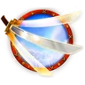
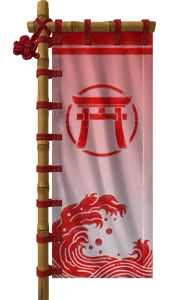
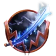
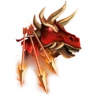
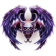
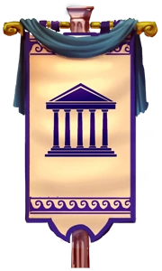
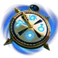
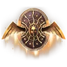

| Nombre | Panteón | Descripción | |
|---|---|---|---|
| Amaterasu  Guerrero |
Japonés |
“Japan, land of the rising sun; their pantheon consists of many gods and goddesses, more commonly known as "Kami", or "highly placed being." The rank of Kami was bestowed on natural objects and beings such as mountains, rivers, animals, as well as esteemed ancestors. While Kami appear in many forms and usually have human qualities, they are powerful beings who control aspects of nature. Of the two types of Kami, the heavenly Kami are superior than their earthly counterparts and only reside in heaven, hence, they must use messengers to keep them up to date on earth and in the underworld. The main myths that accompany these religious traditions are that of the creation of the world, the founding of the Japanese Islands, and those of magical creatures, humans, and deities.” |
 |
| Susano  Asesino |
|||
| Hachiman  Cazador |
|||
| Thanatos  Asesino |
Griego |
“The ancient Greeks did not believe that the gods created the universe but rather that the universe created the gods. Long before the creation of the gods, heaven and earth had already been formed. Heaven and earth were referred to as the parents and their children, the Titans. The Elder gods, also called the Titans, were known to have super strength and enormous size. The most powerful of the Titans was Cronus, who was the ruler of his kin. One day, however, his son Zeus, a mere god, dethroned Cronus and made himself ruler of all gods. He and the other gods, Poseidon, Hades, Hestia, Hera, Ares, Athena, Apollo, Aphrodite, Hermes, Artemis, and Hephaestus, were the 12 great Olympians. Immortal and invincible, they watched mortal men from their abode on Mt. Olympus, the highest mountain in Greece. It is said that the entrance of Olympus is a great gate made up of clouds. It is a peaceful paradise where there are stretches of cloudless skies, endless sunshine, and where the sound of Apollo's lyre can be heard playing.” |  |
| Chronos  Mago |
|||
| Athena  Guardian |